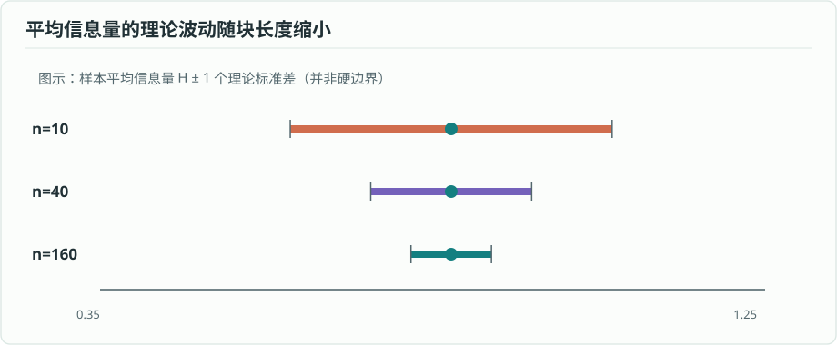
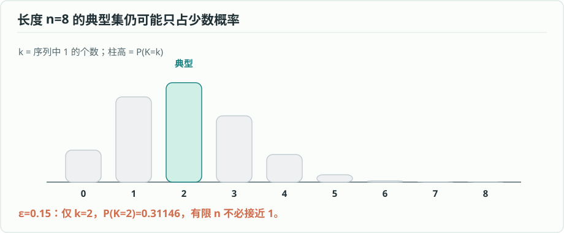

最可能的一条序列，反而几乎不会发生
一枚偏向 0 的硬币满足 P(1)=1/4、P(0)=3/4。对长度为 n 的二进制序列，最可能的单条结果是全 0，但其概率 (3/4)ⁿ 随 n 增大趋于 0。典型的长样本会包含大约四分之一的 1，而不是永远是 0。
压缩不需要只考虑“最可能的一条序列”；真正重要的是承载接近全部概率质量的那组序列有多大。
把联合概率的乘积转成平均自信息
独立同分布使 P(X₁=x₁,…,Xₙ=xₙ)=∏ᵢp(xᵢ)。对数把乘积转为和，单位符号自信息就是 n 个独立同分布随机变量 Zᵢ=−log₂p(Xᵢ) 的样本均值，它们的期望都是 H(X)。
弱大数定律给出依概率收敛。它不说每一条长序列都如此，也不保证有限 n 时每个样本已经靠近均值。
方差揭示渐近集中发生的尺度
对于 p(1)=0.25，单个自信息 Z 的两个取值是 2.000 和 0.4150 bits。E[Z]=h₂(0.25)≈0.8113 bits，Var(Z)=0.25×0.75×[log₂3]²≈0.471。独立样本平均的方差是 Var(Z)/n，所以标准差与 1/√n 成正比。

严格定义弱典型集
给定 ε>0，弱典型集由所有正概率且单位符号自信息与 H 的偏差不大于 ε 的序列构成：
它等价于每条典型序列的概率落在 2−n(H+ε) 与 2−n(H−ε) 之间。这是“指数尺度上近似等概率”，不是说所有典型序列的概率严格相同。

典型集的质量与基数：三条性质
对任意固定 ε>0，P(Xⁿ∈Aⁿ_ε)→1。假设 n 已足够大使该概率至少为 1−δ，则每条典型序列至少有 2−n(H+ε) 的概率、至多有 2−n(H−ε) 的概率，于是：
上界用概率总和不超过 1；下界用典型集总质量至少 1−δ。把上下界取以 2 为底的对数再除以 n，可见典型集的数量在指数意义上近似 2nH。
利用 K∼Binomial(n,0.25) 精确累加。有限 n 的离散跳动不是定理失效。
什么时候可以把典型集编成短编号？
在允许错误概率趋于 0 的固定长度近乎无损压缩中，只为典型集中的约 2nH 条序列编号；非典型序列允许输出错误或保留标记，因此渐近每符号码率趋于 H。
若要每条序列都精确恢复的完全无损压缩，就不能把典型集之外的序列丢弃。可以发送逃逸标志和例外的原始描述，使用可变码长并分析其期望。两种码的保证不同。
可复核实验：不模拟，精确计算有限 n 的典型质量
独立伯努利信源下，长度 n 的序列若包含 k 个 1，则这一类的概率总量恰为 C(n,k)pk(1−p)n−k。所以我们可枚举 k 而不必枚举 2n 条序列。
from math import comb, log2
p, eps = .25, .15
H = -p*log2(p)-(1-p)*log2(1-p)
def mass(n):
return sum(comb(n,k)*p**k*(1-p)**(n-k)
for k in range(n+1)
if abs(-(k*log2(p)+(n-k)*log2(1-p))/n-H) <= eps)
assert abs(mass(8)-.31146240234375) < 1e-12
assert abs(mass(40)-.8005436824591) < 1e-10
print(round(mass(80), 6)) # 0.948398来源与延伸阅读
- Cover & Thomas (2006), Elements of Information Theory：§3.1–3.3 渐进均分性及高概率集的基数界。
- MIT 6.441 (2010)，Lecture 3：典型集与 AEP。
- Stanford EE376A：渐进均分性与近乎无损压缩。